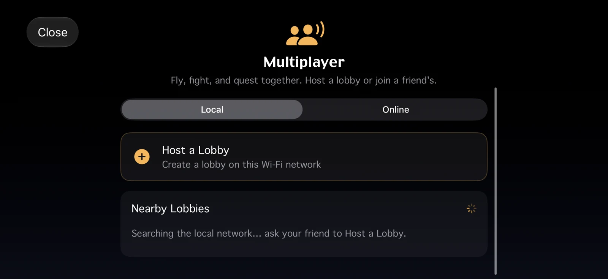

How multiplayer works
Everyone keeps their own galaxy and their own pilot save. Multiplayer is an overlay, never a merge. You fly your game as usual; when two or more players are in the same star system, that system is synced for all of them. Ships, combat, shots and events are shared, so you can help each other, fight together, or fight each other. In different systems nothing heavy is synced, you just see who is where.
The typical use: "I'm stuck, come help me". Your friend jumps to your system and drops in.
- Authority is per system. One of the players in a system runs that system for everyone in it (the lowest player id). The others see the authority's version of the system. If that player leaves, another takes over, with a brief hiccup. Your own galaxy elsewhere is never touched.
- Chat works from anywhere in the session, so you can call a friend to your system before they arrive.
- Story: a shared encounter runs the authority's storyline. Your outfitter, shipyard, rank and combat rating still come from your own save.

Beta. The netcode and sync logic are tested, but multiplayer has seen little play on real networks and hardware so far. Expect rough edges and please report them.
Stakes and rules
The host picks the rules when opening the game, and every joiner sees them. They only govern what happens between players while you share a system.
| Preset | What it means |
|---|---|
| Safe | Sparring. PvP is allowed but damage and death are not real for visitors. |
| Full stakes | Your ship is your real ship. Damage and death count in your own save, and trades move real items. |
| Custom (Godot hub) | Pick each rule yourself. |
The individual rules are: allow PvP, real PvP damage, friendly fire (splash damage hits allies), permadeath (destroyed ships are really lost) and allow trading. Until PvP is switched on, players who share a government cannot hurt each other. The host's game speed also applies to everyone, so all ships run on one clock.
Full stakes is real. A permadeath game can end your pilot. Back up your pilot first, or stay on Safe.
Apple app: Mac, iPhone, iPad, Apple TV
On Mac, iPhone, iPad and Apple TV, open Multiplayer from the main menu. The hub has two tabs, Local and Online.
Internet play (Game Center)
Online play runs on Apple's Game Center, so you must be signed in to Game Center in the system Settings. Apple handles matchmaking and relays the traffic. NOVA Swift runs no servers.
- Host a Lobby: name it, pick the stakes, then invite friends over Game Center. Invites show up in your friend's app on their own, even if they are in flight.
- Quick Match: matches you with anyone who has exactly your plug-in set. An empty queue is normal for a game this size.
- Public Lobbies: a list of lobbies whose hosts chose to list them.
Public lobby list and knocking
When you host, hosting is invite-only unless you tick List this lobby publicly. Listing shows your pilot name to everyone, which is why it is off by default. The list is stored in Apple's CloudKit, not on a NOVA Swift server.
To join a listed lobby you "knock". The host sees your request and, if they accept, sends you a real Game Center invite. Nobody can pull themselves into a game. If the host ignores or declines you, you only see your request time out; there is no rejection message.
Local Wi-Fi
The Local tab hosts or joins a named lobby on the same network (Apple's MultipeerConnectivity). Nearby lobbies appear in a list. Separate groups on one network do not mix.
Linux, Steam Deck and Windows: the Multiplayer hub
The Godot app joins games over ENet (UDP), by address, on your LAN, or from a public list. There is no Game Center here. Windows is not released yet, but the hub is the same code. The hub has up to three tabs:
- Browse (the default): one list of every server you can reach. Saved servers are pinned at the top with a filled star, then LAN games and the public directory, merged by address. Each row shows its status, name, address, players, ping and a Join button. Use the search box and filter chips (All, Saved, LAN, Public, Compatible only, Has players, No password, and region) to narrow it down. Refresh re-queries the list.
- Host: start your own game (see below).
- Session: appears only while you are connected. It shows the players, rules, chat and a Leave button (Stop hosting if you host). The host also gets Kick and Ban here.
Quick Connect is a button in the hub's header. Type host, host:port or [ipv6]:port, add a password if there is one, and optionally turn on Save this server to keep it in your Saved list. You can also tap the star on any row to save or remove it.
The Public source is a list of community servers that is downloaded over HTTPS and cached, then live-checked for online status, players, password, version and ping. The list is only addresses, so an out-of-date entry just shows as offline. Browse the same list on the web at the server list.
Open Multiplayer from the main menu, or from the pause menu while flying. The hub works with mouse, keyboard and gamepad. On a pad, LB/RB switch tabs, Y refreshes the list, X does the page's main action (Quick Connect, or Start hosting) and B goes back. See the Browse view and hosting sections below.
Hosting a game
You can host from the game itself, or run an always-on server with no pilot or window. Hosting from the game is the easy way to play with friends: your game keeps running normally, and anyone who enters your star system plays it with you. For an always-on server see the dedicated server guide.
Open Multiplayer, then Host
Apple: Online then Host a Lobby (or Local for Wi-Fi). Godot: the Host tab.
Name it and set the rules
Choose Safe, Full stakes or (Godot) Custom, as described in Stakes and rules. On Godot you can also set the port, a maximum number of players (2 to 16) and an optional password.
Choose who can see you
Godot: Visible on the local network (LAN) is on by default. Tick Open the port on my router (UPnP) to try automatic port forwarding. Apple: tick List this lobby publicly only if you want strangers to find you.
Start hosting and share the address
The Host page shows your local address and port. Friends on your network join with that. Over the internet they need your public IP and the forwarded port.
| Port | Used for |
|---|---|
53735/udp | The game itself (default; you can change it). |
53736/udp | Status pings, so your server shows players and latency in other people's lists. It is the game port + 1 if you changed the port. |
Port forwarding
On a LAN nothing needs forwarding. Over the internet, forward UDP 53735 (and 53736 if you want to show up in lists with live info) on your router to the machine running the game, and allow it in the firewall. Windows asks the first time; on Linux that can be sudo ufw allow 53735/udp. The Host page's UPnP option asks your router to do this for you, but many routers have UPnP off.
Passwords and encryption
A password is optional and is sent hashed. Godot's Host page also has an Encrypt connection toggle (DTLS). Players pin the server's key the first time they join. Plain clients cannot join an encrypted game, so leave it off if people on other builds need to connect. Without it, traffic is not encrypted, which is fine for friends and LANs.
What has to match
- Network protocol version. Builds with the same protocol connect even if the app version differs; the hub just notes "different version". A protocol change is rare and needs an update.
- Gameplay plug-ins. Anyone joining must have the same gameplay plug-ins (and total conversion) as the host, compared by content hash, so the same version. Otherwise the same ship or system id would mean different things on each side.
- Cosmetic plug-ins are free. Plug-ins that only change art, sound, music, movies, fonts or interface text never block a join, and two copies that differ only in artwork still match.
If the plug-ins differ, the join is refused and the screen says what is missing, extra or the wrong version. On Linux and Steam Deck, when everything the server needs is in the plug-in catalog, you get one prompt: Install & Join. It installs and enables the server's plug-ins (and switches off your extras and selects its total conversion), reloads the game data, then joins again. Your own plug-in set is remembered and restored when the session ends. This needs to be done from the main menu, not mid-flight. If something is not in the catalog, you get the detailed list plus the server's website or contact, if known. More in Installing plug-ins.
Chat and trading
In flight, press T to open chat (/ if you use the modern key layout), Enter to send and Esc to close. On a gamepad use Menu, then Multiplayer. Joins, leaves, rule changes and kicks show as short toasts. The chat panel also lists the players with ping and system.
Trading lets two players swap credits, cargo and outfits, if the host allows trading. Both sides see the other's offer live; changing either offer clears both confirmations, and the swap happens only when both accept. Each side applies it to its own save. On Apple it starts from the player's Trade button in the lobby roster. On Godot there is a Trade button on the player rows in chat, and the trade window shows what you give next to what you receive. Test it on Safe stakes first.
Cross-play: Apple and Godot
Today the Apple app and the Godot app cannot join each other's games. Apple uses Game Center and local Wi-Fi, Godot uses ENet. The groundwork to join Godot hosts and dedicated servers from Apple devices is built and tested at the protocol level, and both apps share the same protocol version and plug-in rules. It is not wired into the Apple app's Multiplayer screens yet, so there is no button for it. We will announce it when it ships.
Troubleshooting
| Message | What it means and what to do |
|---|---|
Incompatible multiplayer protocol (proto) | You and the host run builds with different network protocols. Update the older one. |
Game version mismatch (version) | The host asks for the same NOVA Swift version. Update to match. |
Wrong or missing password (password) | Ask the host for the password and try again. |
Server full (full) | The host's player limit is reached. |
Plug-ins differ (plugins) | See What has to match. Use Install & Join, or install, update or disable what the list says. |
Banned (banned) | The host banned you from this game. |
Couldn't connect (timeout) | Nothing answered. Check the address, that the server is running, and that its UDP port (default 53735) is forwarded and allowed through the firewall. |
Behind CGNAT, or can't forward ports
Some internet providers put you behind carrier-grade NAT, where port forwarding is impossible. A sign is a router "WAN" address that differs from what a "what is my IP" site shows, or an address starting 100.64 to 100.127. NOVA Swift does not provide NAT traversal or relays. Use a VPN-style overlay such as Tailscale or ZeroTier: everyone joins the host's overlay address and no forwarding is needed. For a public listing, host on a VPS or another machine with a real public address.
Tip. Many routers cannot connect to their own public address from inside the network. To test your port forwarding, ask a friend on another network to try, or look at your server from another connection.
Next steps: run an always-on server with the dedicated server guide, and find public games on the server list.